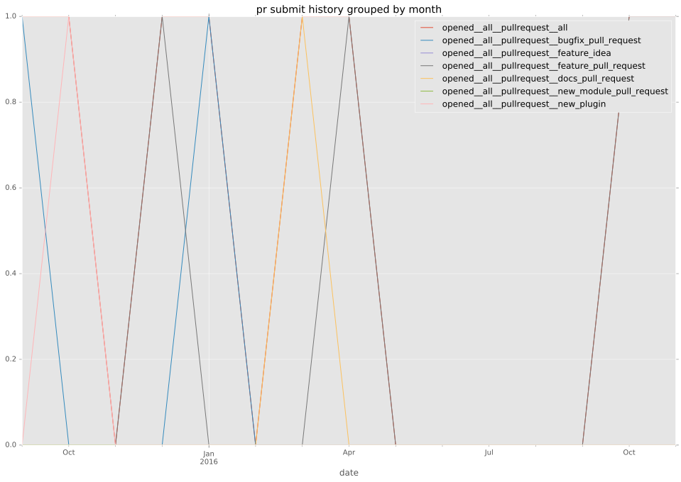
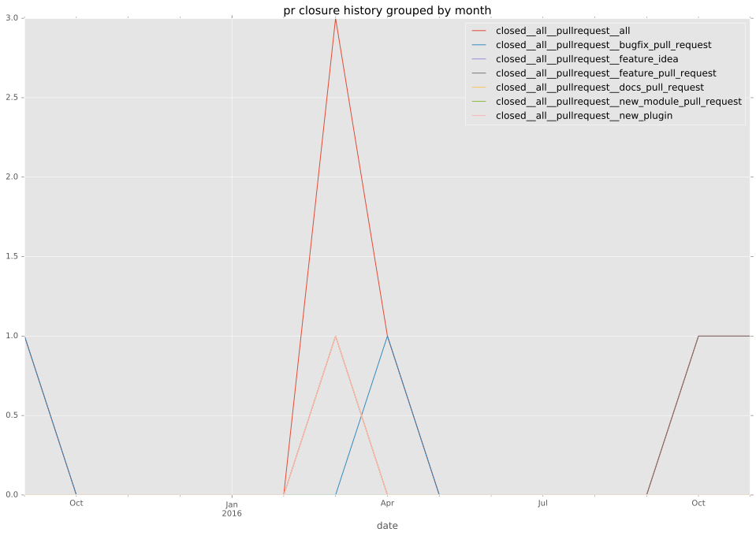

authors
- jhawkesworth
maintainers
- jhawkesworth
contributors
- jhawkesworth : 3 commits
- dagwieers : 2 commits
total issue counts
feature pull request: 1
pullrequest: 5
docs pull request: 1
bugfix pull request: 2
feature idea: 1
issue: 2
new plugin: 1
bug report: 1
issue history
pullrequest history


days open by issue type
bugfix pull request
count: 4
std: 7.50555349947
min: 0
max: 13
median: 6.5
mean: 6.5
all
count: 11
std: 51.5263392486
min: 0
max: 125
median: 13.0
mean: 41.1818181818
pullrequest
count: 0
std: nan
min: nan
max: nan
median: nan
mean: nan
docs pull request
count: 2
std: 0.0
min: 0
max: 0
median: 0.0
mean: 0.0
feature pull request
count: 2
std: 0.0
min: 82
max: 82
median: 82.0
mean: 82.0
feature idea
count: 0
std: nan
min: nan
max: nan
median: nan
mean: nan
issue
count: 0
std: nan
min: nan
max: nan
median: nan
mean: nan
new plugin
count: 2
std: 0.0
min: 125
max: 125
median: 125.0
mean: 125.0
bug report
count: 1
std: nan
min: 13
max: 13
median: 13.0
mean: 13.0
closures grouped by total days open